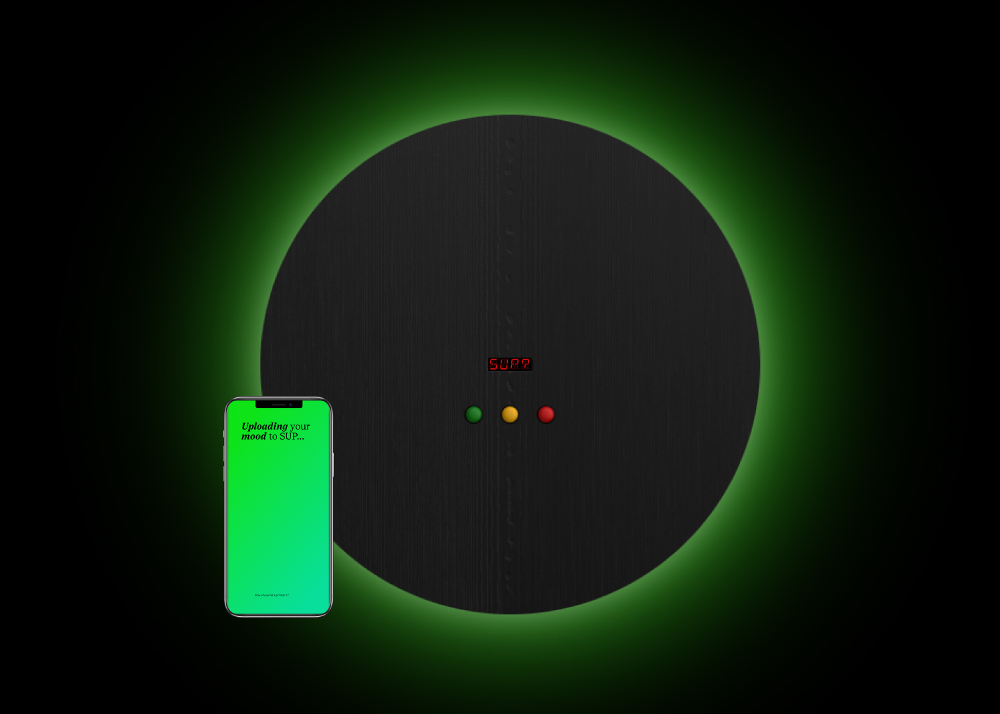

SUP?
2024
2024
UI design
Arduino
Prototyping
Arduino
Prototyping
Sharing emotions
SUP? is an interactive installation that visualizes students' daily
moods through colored LEDs. By connecting via an app, students can
share their emotions, fostering a sense of community. In response to
the stress and isolation of university life, SUP? creates a safe space
for openness, helping students see and support each other through
shared feelings.

Each day, students log their moods through the app, which sends the
data to SUP?, an installation in the university atrium. An LED
lights up in the user's chosen color. Visitors can interact with
SUP? by using buttons to highlight different mood colors and view
the number of students feeling each way on a display.
Connecting with others and oneself
In the app, students can view their friends' moods along with their
comments, fostering empathy. The 'history' section allows them to
track their own moods over time, offering insights into their recent
emotional patterns.
Physical prototyping
The SUP? prototype features a wooden structure housing an Arduino that
connects to the app for functionality. The tangible interface (TUI)
includes three buttons and a display for user interaction. Surrounding
the prototype is an LED strip that reflects users' moods, creating a
soft, ambient glow.

Team
Clara Di Bella / Giovanni Riavez